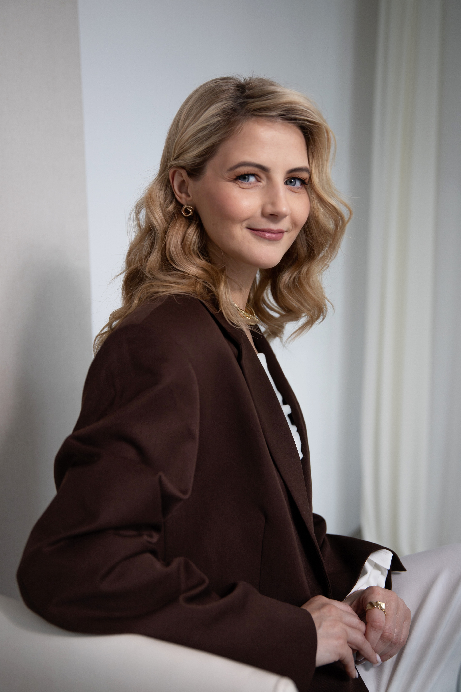

Онлайн-встреча с психологом в игровом формате
Первый шаг
Для тех, кто застрял — и хочет наконец сдвинуться
Ведёт клинический психолог · 11 лет практики · 5000+ сессий
Группа · до 1,5 часа · Zoom
Это для вас, если
Всё понимаете — но ничего не меняется
Ходите по кругу и не можете найти выход
Знаете, что надо делать — и всё равно не делаете
Что будет
1
Сформулируете настоящий вопрос
Тот, который действительно болит. Не тот, что «нужно решить» — а тот, что не отпускает.
2
Увидите, что удерживает на месте
Страх, вина, привычный сценарий. Назвать это — значит перестать быть в плену у невидимого.
3
Найдёте следующий шаг
Конкретный и ваш. Не универсальный совет — а именно то, что можете сделать вы, исходя из вашей ситуации.
4 июля 2026 · 12:00 по Мск
490 ₽ за участие
онлайн · до 1,5 часа · Zoom
Записаться в Telegram →
Записаться в MAX
Регистрация занимает минуту. В переписке отвечу на вопросы, помогу с оплатой и пришлю ссылку на встречу.
Как проходит
Это не эзотерика
В основе — авторский психологический формат на базе игры Лила. Это не гадание, не мистика и не «послания вселенной». Игра здесь — проективный инструмент: способ обойти рациональные защиты и увидеть то, что обычно остаётся в слепой зоне.
За 11 лет практики я адаптировала этот инструмент для работы с жизненными тупиками.
Кто ведёт

Галина Васильева
Клинический психолог · 11 лет практики · 5000+ сессий · автор двух книг
Частые вопросы
Это не гадание на кубиках?
Нет. Кубик и поле — лишь способ задать структуру разговору с собой. Работаем с реальной ситуацией методами психологии, а не «предсказаниями».
Меня будут разбирать при всех?
Нет. Каждый работает со своим запросом в своём темпе. Можно прийти и сначала просто посмотреть, как это устроено — без обязательства открываться.
А вдруг это очевидные советы?
Игра не даёт «совет» — она показывает то, что вы не видите изнутри ситуации. Ведёт клинический психолог, а не коуч успеха: работаем с вашим конкретным случаем.
А если мне не подойдёт или не сработает?
490 ₽ — символическая цена за то, чтобы попробовать без большого риска. Можно прийти и сначала просто наблюдать, включиться в своём темпе — без обязательства открываться перед группой.
Отзывы
4 июля 2026 · 12:00 по Мск
490 ₽ за участие
онлайн · до 1,5 часа · Zoom
Записаться в Telegram →
Записаться в MAX
Регистрация занимает минуту. В переписке отвечу на вопросы, помогу с оплатой и пришлю ссылку на встречу.